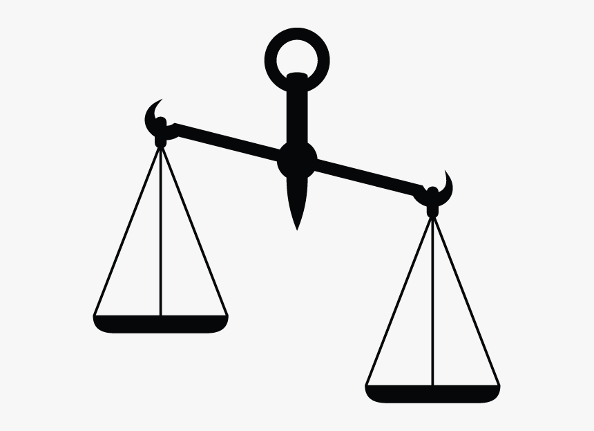

Library Services During and After the Pandemic
The Role of Library Technology Services
The COVID-19 pandemic is presenting academic libraries with new challenges that will require us to
change how we provide service and access to our collections. What do you see as the priorities for
Library Technology Services in its efforts to support the Library and the Carleton community in both the
short- and long-term?
Main points to consider:
Planning and Prediction
Labour and Opportunity Costs
Technical Fixes and Organizational Solutions
Short Term and Long Term
Priorities are never singular or
hierarchical; they are always balancing acts, so when I
think of priorities, I think of what elements need to be
balanced. I have framed these priorities as pairs to
indicate that.
Planning and Prediction
Difficult to predict what society
will look like, therefore what role libraries are going to
play. However, Library Technology Services can adopt
approaches will will help support flexible planning that is
able to quickly change direction. Key supports: modularity,
interoperability, agility. In terms of prediction, LTS is
well-positioned to contribute in terms of longer-term trends
(e.g. federated identity, decentralized work, etc)
Labour and Opportunity Costs

One way to understand library
systems' relationship to the rest of the organization is to
take a political economy approach and understand technology as
stored-up labour. Library technology services can help
determine when it makes sense for technology to take over from
living labour, allowing library workers to do other things. In
other words, library technology services helps reduce
opportunity costs.
Labour and Opportunity Costs
But this applies to the campus
community as well. Ranganathan's fourth law - save the time of
the reader - applies here. But we have to understand the
opportunity costs in this case as well: is saving time and
energy justified by pedagogical concerns? I think Library
Technology Services are often expert at weighing these kinds
of costs, because we trade off stored up and living labour all
the time.
Technical Fixes and Organizational Solutions
On the other hand, Library
Technology Services is not just technical support. Sometimes
LTS can provide a technological fix, but that won't solve
organizational problems. These problems are bound to become
more acute in a post-pandemic landscape, so LTS can help
distinguish what is a proper technological problem with a
technological solution, and what is really an organizational
problem.
Short Term
Electronic
Resources: Expand access to digital collections (HathiTrust ETAS,
Internet Archive NEL, E-book discoverability, reserves).Physical Resources: Support reopening of physical collection (checkout
machines, circulation rules, ILS notifications, pickup
bookings
etc.)Access: Provide or extend off-campus access to different
constituencies.Communication: Enable and ensure best information management and
communication practices across all online library
platforms.
Long Term
Digitization and interoperability (data, UX)
Digital divide
Digital scholarship
Equity, Diversity, and Inclusion
All of these long term trends can be
thought of both as technological issues and user-experience
ones, and it's important to bear both those aspects in mind.
In my view, the biggest technical obstacle to LTS support
for the library and the campus
is data interoperability, which I see, perhaps unusually as
User-Experience Related. Inconsistency across multiple
systems is very jarring UX, especially when the underlying
systems are more-or-less black boxes. In a time of crisis,
the less "cognitive load" you can place on users in terms of
UX the better. There is also the question of efficiency of
discovery which is vitally important when looking for, say,
health information or government updates.
Digital divide has been a longstanding problem, and is only
going to become more acute as more workers and students are
working remotely, and as relationship with the university
becomes more and more virtualized and decentralized. There
needs to be a holistic approach, to be sure, but LTS has a
critical role to play here.
Digital scholarship. There's always been a productive
ambiguity here between scholarship *of the digital* and
scholarship *done digitally*, and I think this ambiguity
opens up space to rethink some services - both public facing
and technological - in a pandemic and post-pandemic period.
EDI: Here is where intersectionality comes in. The pandemic
in conjunction with anti-racist movements across the world
are making it vitally important that we understand the
potential inequalities baked into our technological
policies, especially as we start to rely more and more on
technological solutions to the problems mentioned above, and
as there is an urge to move very quickly. Even seemingly
innocuous policies (mention CCID block policy) can have
structural inequalities of race or gender built in. The
pandemic and Black Lives Matter movement are providing us
with an opportunity to reconceive the bases of our
technology policies and uses.